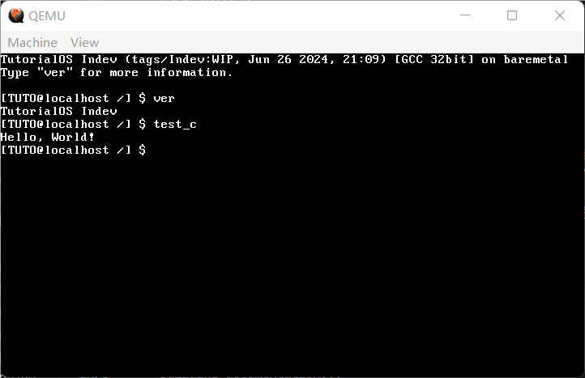

24 C语言应用程序（下）
欢迎回来。我们本节的任务十分明确：支持 malloc，同时为应用程序传参。
不过，在一开始我们先来点“轻松”的。或许在第 16 节和第 22 节的时候，有的读者会有这样的疑问：
你 shell 明明集成在内核当中，为什么还要费事去系统调用呢？
所以我们今天的第一个 surprise，就是把 shell 从内核当中给剥离出去，做成一个单独的 app。没有什么原因，只是因为这样泰裤辣！（逃
上一节已经初步支持了 C 语言应用程序，而我们的 shell 一不用传参，二来在一番微操之下规避了 malloc，因此可以直接放在这个框架里。
首先来把现在的 shell 改造成一个应用程序一样的东西：
代码 24-1 现在的 shell（apps/shell.c）
#include <stdio.h>
#include <stddef.h>
#include <stdint.h>
#include <stdbool.h>
#include <unistd.h>
#define MAX_CMD_LEN 100
#define MAX_ARG_NR 30
static char cmd_line[MAX_CMD_LEN] = {0}; // 输入命令行的内容
static char *argv[MAX_ARG_NR] = {NULL}; // argv，字面意思
static void print_prompt() // 输出提示符
{
printf("[TUTO@localhost /] $ "); // 这一部分大家随便改，你甚至可以改成>>>
}
static void readline(char *buf, int cnt) // 输入一行或cnt个字符
{
char *pos = buf; // 不想变buf
while (read(0, pos, 1) != -1 && (pos - buf) < cnt) { // 读字符成功且没到cnt个
switch (*pos) {
case '\n':
case '\r': // 回车或换行，结束
*pos = 0;
putchar('\n'); // read不自动回显，需要手动补一个\n
return; // 返回
case '\b': // 退格
if (buf[0] != '\b') { // 如果不在第一个
--pos; // 指向上一个位置
putchar('\b'); // 手动输出一个退格
}
break;
default:
putchar(*pos); // 都不是，那就直接输出刚输入进来的东西
pos++; // 指向下一个位置
}
}
}
static int cmd_parse(char *cmd_str, char **argv, char token)
{
int arg_idx = 0;
while (arg_idx < MAX_ARG_NR) {
argv[arg_idx] = NULL;
arg_idx++;
} // 开局先把上一个argv抹掉
char *next = cmd_str; // 下一个字符
int argc = 0; // 这就是要返回的argc了
while (*next) { // 循环到结束为止
if (*next != '"') {
while (*next == token) *next++; // 多个token就只保留第一个，windows cmd就是这么处理的
if (*next == 0) break; // 如果跳过完token之后结束了，那就直接退出
argv[argc] = next; // 将首指针赋值过去，从这里开始就是当前参数
while (*next && *next != token) next++; // 跳到下一个token
} else {
next++; // 跳过引号
argv[argc] = next; // 这里开始就是当前参数
while (*next && *next != '"') next++; // 跳到引号
}
if (*next) { // 如果这里有token字符
*next++ = 0; // 将当前token字符设为0（结束符），next后移一个
}
if (argc > MAX_ARG_NR) return -1; // 参数太多，超过上限了
argc++; // argc增一，如果最后一个字符是空格时不提前退出，argc会错误地被多加1
}
return argc;
}
void cmd_ver(int argc, char **argv)
{
puts("TutorialOS Indev");
}
int try_to_run_external(char *name, int *exist)
{
int ret = create_process(name, cmd_line, "/");
*exist = false;
if (ret == -1) {
char new_name[MAX_CMD_LEN] = {0};
strcpy(new_name, name);
int len = strlen(name);
new_name[len] = '.';
new_name[len + 1] = 'b';
new_name[len + 2] = 'i';
new_name[len + 3] = 'n';
new_name[len + 4] = '\0';
ret = create_process(new_name, cmd_line, "/");
if (ret == -1) return -1;
}
*exist = true;
ret = waitpid(ret);
return ret;
}
void cmd_execute(int argc, char **argv)
{
if (!strcmp("ver", argv[0])) {
cmd_ver(argc, argv);
} else {
int exist;
int ret = try_to_run_external(argv[0], &exist);
if (!exist) {
printf("shell: `%s` is not recognized as an internal or external command or executable file.\n", argv[0]);
} else if (ret) {
printf("shell: app `%s` exited abnormally, retval: %d (0x%x).\n", argv[0], ret, ret);
}
}
}
void shell()
{
puts("TutorialOS Indev (tags/Indev:WIP, Jun 26 2024, 21:09) [GCC 32bit] on baremetal"); // 看着眼熟？这一部分是从 Python 3 里模仿的
puts("Type \"ver\" for more information.\n"); // 示例，只打算支持这一个
while (1) { // 无限循环
print_prompt(); // 输出提示符
memset(cmd_line, 0, MAX_CMD_LEN);
readline(cmd_line, MAX_CMD_LEN); // 输入一行命令
if (cmd_line[0] == 0) continue; // 啥也没有，是换行，直接跳过
int argc = cmd_parse(cmd_line, argv, ' '); // 解析命令，按照cmd_parse的要求传入，默认分隔符为空格
cmd_execute(argc, argv); // 执行
}
puts("shell: PANIC: WHILE (TRUE) LOOP ENDS! RUNNNNNNN!!!"); // 到不了，不解释
}
int main()
{
shell();
return 0;
}
从上面的文件名就可以知道，我们已经把 shell 挪到了 apps 目录下；同时，在最后也加了一个 int main()，虽然说可以直接在 shell() 上改，但留点遗存也不是不行（？）
下面引入了一堆头文件，其中的 unistd.h 是上一节所造，stdio.h 早已有之，剩下的 stdint.h、 stdbool.h 以及 stddef.h 是从 common.h 里分离出来的产物：
代码 24-2 三个头文件（include/stdint.h、include/stdbool.h、include/stddef.h）
#ifndef _STDINT_H_
#define _STDINT_H_
typedef unsigned int uint32_t;
typedef int int32_t;
typedef unsigned short uint16_t;
typedef short int16_t;
typedef unsigned char uint8_t;
typedef char int8_t;
#endif
#ifndef _STDBOOL_H_
#define _STDBOOL_H_
typedef _Bool bool;
#define true 1
#define false 0
#endif
#ifndef _STDDEF_H_
#define _STDDEF_H_
#define NULL ((void *) 0)
#endif
如你所见，这三个头文件基本上全都很短小，什么安全保护措施也没加，毕竟纯玩玩也用不到，到时候从什么地方copy一个就行了（bushi）。
另外，在 stdio.h 中把 #include "common.h" 替换成了 #include "string.h" 和 #include "stdint.h" 两行，在 unistd.h 的函数声明开始前增加了一行 #include "stdint.h"。这样做是为了确保这些标准库文件与操作系统文件无关 其实就是闲的。
接下来在 kernel_main 启动 shell 的部分也要修改：
代码 24-3 启动 shell（kernel/main.c）
void kernel_main() // kernel.asm会跳转到这里
{
monitor_clear();
init_gdtidt();
init_memory();
init_timer(100);
init_keyboard();
asm("sti");
task_init();
sys_create_process("shell.bin", "", "/");
task_exit(0);
}
task_a 变量从头到尾没有被用到，因此就删了。下面的 sys_create_process 实质上开启了一个新任务执行 shell.bin。最后，调用 task_exit(0) 退出当前任务，于是操作系统就进入后台，而主要是 ring3 用户层的 shell 在起交互作用了。
在 Makefile 的 APPS 中加入 out/shell.bin，OBJS 中删除 out/shell.o，完成最后的交接。shell 的地位甚至因此还提升了（？）
最后当然是编译运行啦：
 （图 24-1 效果）
执行内部命令还是应用程序都没问题，不过按理来说也算理所应当吧，到最后也没做多少修改（笑）。
热身完成，筋骨也活动得差不多了，也该回顾一下上一节的两大目标：实现 malloc 以及给应用程序传参。
说到底，这其实是同一个问题：如果应用程序能直接访问操作系统的内存不就好了？这样可以直接使用 kmalloc、kfree，传参随便写个系统调用也就可以做到了。可是应用程序只能访问应用程序段自己的地址，这是出于安全的考虑：如果应用程序能访问操作系统的内存，那不就能随便破坏了吗。
所以，现在的问题就变成了：要由操作系统提供一段位于应用程序数据段内的内存，接下来就可以让应用程序自治，通过系统调用等等手段从这里获取内存。
对 C 语言有些了解的读者应该知道，malloc 实际上是从一个叫“堆”的地方获取内存的；它并不是直接的系统调用，真正用于向操作系统申请内存的系统调用是 brk、 sbrk 和 mmap。mmap 的本意是将文件内容映射到内存当中，与普通的读取不同的是，对映射后内存的修改会立刻同步到文件；而通过使用一些特殊文件，就可以实现凭空申请内存的效果。
然而，实现一个 mmap 对我们来说太过困难，准备一个特殊文件也不在现有的框架之内，因此就算了。接下来的 brk 和 sbrk，一看名字就知道是一对函数，查阅 linux manual 知道它们操控着一个叫做 program break 的玩意。手册上说它是什么数据段的终止，这是什么不知道；不过使用这两个函数可以修改这个位置，从而给数据段里凭空多出内存来，这就是为我们所用的内存了。
brk 是直接设置 program break，我还得自己维护上一个位置才能申请，相比之下，还是直接使用 sbrk 更加直接，它的参数是增量，返回的是旧的 program break 的位置，原型如下：
void *sbrk(int incr);
和 malloc 一对比，是不是看着很接近？更棒的是，incr 还可以是负数，相当于在释放用完的内存；也就是说，用 sbrk 一个函数就可以实现内存的分配和释放，接下来就只是管理的事了。
那么我们最终的问题，就变成了两个：
1) 如何实现 sbrk；
2) 如何通过 sbrk 实现 malloc。
先从第一个开始吧。既然所谓的 program break 表示数据段的终止，我们先来实现一个可以用来扩张数据段的函数。不过说是扩张，到头来其实也还是删掉旧的创建新的。
内核的数据段已经占满了 4GB，给内核实现扩张毫无意义。因此，我们给任务添加一个 is_user 标签，表示是不是应用程序：
代码 24-4 添加新标签（include/mtask.h、kernel/mtask.c、kernel/exec.c）
typedef struct TASK {
uint32_t sel;
int32_t flags;
exit_retval_t my_retval;
int fd_table[MAX_FILE_OPEN_PER_TASK];
gdt_entry_t ldt[2];
int ds_base;
bool is_user; // here
tss32_t tss;
} task_t;
for (int i = 3; i < MAX_FILE_OPEN_PER_TASK; i++) {
task->fd_table[i] = -1;
}
task->is_user = false; // here
return task;
void app_entry(const char *app_name, const char *cmdline, const char *work_dir)
{
int fd = sys_open((char *) app_name, O_RDONLY);
int size = sys_lseek(fd, -1, SEEK_END) + 1;
sys_lseek(fd, 0, SEEK_SET);
char *buf = (char *) kmalloc(size + 5);
sys_read(fd, buf, size);
int first, last;
char *code;
int entry = load_elf((Elf32_Ehdr *) buf, &code, &first, &last);
if (entry == -1) task_exit(-1);
char *ds = (char *) kmalloc(last - first + 4 * 1024 * 1024 + 5);
memcpy(ds, code, last - first);
task_now()->is_user = true; // here
task_now()->ds_base = (int) ds;
ldt_set_gate(0, (int) code, last - first - 1, 0x409a | 0x60);
ldt_set_gate(1, (int) ds, last - first + 4 * 1024 * 1024 + 1 * 1024 * 1024 - 1, 0x4092 | 0x60);
start_app(entry, 0 * 8 + 4, last - first + 4 * 1024 * 1024 - 4, 1 * 8 + 4, &(task_now()->tss.esp0));
while (1);
}
接下来就可以实现给用户扩张数据段的函数了：
代码 24-5 扩张数据段（kernel/exec.c）
static void expand_user_segment(int increment)
{
task_t *task = task_now();
if (!task->is_user) return; // 内核都打满4GB了还需要扩容？
gdt_entry_t *segment = &task->ldt[1];
// 接下来把base和limit的石块拼出来
uint32_t base = segment->base_low | (segment->base_mid << 16) | (segment->base_high << 24); // 其实可以不用拼直接用ds_base 但还是拼一下吧当练习
uint32_t size = segment->limit_low | ((segment->limit_high & 0x0F) << 16);
if (segment->limit_high & 0x80) size *= 0x1000;
size++;
// 分配新的内存
void *new_base = (void *) kmalloc(size + increment + 5);
if (increment > 0) return; // expand是扩容你缩水是几个意思
memcpy(new_base, (void *) base, size); // 原来的内容全复制进去
// 用户进程的base必然由malloc分配，故用free释放之
kfree((void *) base);
// 那么接下来就是把new_base设置成新的段了
ldt_set_gate(1, (int) new_base, size + increment - 1, 0x4092 | 0x60); // 反正只有数据段允许扩容我也就设置成数据段算了
task->ds_base = (int) new_base; // 既然ds_base变了task里的应该同步更新
}
开头三行显然不需要解释。接下来把应用程序数据段的基址（这样我才知道从哪拿到旧数据）和大小（这样我才知道新的需要多大）拼出来。死去的 GDT 又开始攻击我们了，偷一个小图过来：

（图 24-2 GDT 描述符结构）
以及它的代码表示：
struct gdt_entry_struct {
uint16_t limit_low; // BYTE 0~1
uint16_t base_low; // BYTE 2~3
uint8_t base_mid; // BYTE 4
uint8_t access_right; // BYTE 5, P|DPL|S|TYPE (1|2|1|4)
uint8_t limit_high; // BYTE 6, G|D/B|0|AVL|limit_high (1|1|1|1|4)
uint8_t base_high; // BYTE 7
} __attribute__((packed));
typedef struct gdt_entry_struct gdt_entry_t;
按照这个结构再去看上面的代码，拼 base 是显而易见的，拼 limit 则涉及到一个 G 位的问题：G 位位于 limit_high 的最高位，当它为 1 时，代表整个 limit 代表的是一个以 4KB 为单位的段（说白了就是要给 limit 乘上 4096）。拼完以后由于 limit 加 1 才是 size，所以再把 1 给加上。
接下来重新分配一段新的数据段，把旧的东西全都复制过去，唯一的变化就是大小变大了。旧的数据段留着也没有用，既然前面初始化是用 kmalloc 初始化的 ds，新的段也使用 kmalloc 分配，所以可以安全地使用 kfree 把内存释放掉。最后调用 ldt_set_gate 把数据段换成新的，同时更新 task 里的 ds_base，这样如假包换，应用程序毫无感知。
接下来就是实现 sbrk 了。上面的 program break 说是数据段结尾，但如果老是更新数据段的话，内存也吃不消，速度也会慢上一点（不过不仔细看的话，大概是看不出来的）。所以我们先临时开 1MB 缓冲区，这 1MB 用完了再扩展至少 32KB，这样也许会把占用搞小一点（心虚）。
因此，存 program break 不仅要存它现在的位置，还要存给它的缓冲区在哪里结束，这样才可以扩展数据段。
代码 24-6 实现 sbrk（1）——创建 program break（include/mtask.h）
typedef struct TASK {
uint32_t sel;
int32_t flags;
exit_retval_t my_retval;
int fd_table[MAX_FILE_OPEN_PER_TASK];
gdt_entry_t ldt[2];
int ds_base;
bool is_user;
void *brk_start, *brk_end; // here
tss32_t tss;
} task_t;
接下来在 app_entry 中初始化它：
代码 24-7 实现 sbrk（2）——初始化 program break（kernel/exec.c）
void app_entry(const char *app_name, const char *cmdline, const char *work_dir)
{
int fd = sys_open((char *) app_name, O_RDONLY);
int size = sys_lseek(fd, -1, SEEK_END) + 1;
sys_lseek(fd, 0, SEEK_SET);
char *buf = (char *) kmalloc(size + 5);
sys_read(fd, buf, size);
int first, last;
char *code;
int entry = load_elf((Elf32_Ehdr *) buf, &code, &first, &last);
if (entry == -1) task_exit(-1);
char *ds = (char *) kmalloc(last - first + 4 * 1024 * 1024 + 1 * 1024 * 1024 - 5);
memcpy(ds, code, last - first);
task_now()->is_user = true;
// 这一块就是给用户用的
task_now()->brk_start = (void *) last - first + 4 * 1024 * 1024;
task_now()->brk_end = (void *) last - first + 5 * 1024 * 1024 - 1;
task_now()->ds_base = (int) ds; // 设置ds基址
ldt_set_gate(0, (int) code, last - first - 1, 0x409a | 0x60);
ldt_set_gate(1, (int) ds, last - first + 4 * 1024 * 1024 + 1 * 1024 * 1024 - 1, 0x4092 | 0x60);
start_app(entry, 0 * 8 + 4, last - first + 4 * 1024 * 1024 - 4, 1 * 8 + 4, &(task_now()->tss.esp0));
while (1);
}
最后就是 sbrk 的本体了，为了偷懒也放在了 kernel/exec.c 下面（虽然放这里好像不大好？）：
代码 24-8 实现 sbrk（3）——操控 program break（kernel/exec.c）
void *sys_sbrk(int incr)
{
task_t *task = task_now();
if (task->is_user) { // 是应用程序
if (task->brk_start + incr > task->brk_end) { // 如果超出已有缓冲区
expand_user_segment(incr + 32 * 1024); // 再多扩展32KB
task->brk_end += incr + 32 * 1024; // 由于扩展了32KB，同步将brk_end移到现在的数据段结尾
}
void *ret = task->brk_start; // 旧的program break
task->brk_start += incr; // 直接添加就完事了
return ret; // 返回之
}
return NULL; // 非用户不允许使用sbrk
}
到现在为止，就实现了最基本的向内核申请内存的函数。接下来把它搞成一个系统调用，sbrk 就可以使用了：
代码 24-9 实现 sbrk（4）——添加系统调用（include/syscall.h、kernel/syscall.c、kernel/syscall_impl.asm）
#ifndef _SYSCALL_H_
#define _SYSCALL_H_
// 上略...
// exec.c
void *sys_sbrk(int incr);
#endif
switch (eax) {
// 上略...
case 10:
ret = (int) sys_sbrk(ebx);
break;
}
// 下略...
[global sbrk]
sbrk:
push ebx
mov eax, 10
mov ebx, [esp + 8]
int 80h
pop ebx
ret
加了十个系统调用了，相信大家也应该大致熟悉了添加系统调用的流程了吧：首先实现系统调用本身，然后在 syscall.c 的 switch-case 里新加一个分支，最后用汇编仿照格式写一个实现，没有参数（getpid）、一个参数（一堆不列举）、两个参数（open）、三个参数（一堆不列举）的系统调用目前都有了。
下面执行第二步，用 sbrk 实现 malloc。这个网上教程有一大堆，你干脆直接移植 ptmalloc 都行，这里我选择了一种最简单但同时大概也是最不稳定 跑在 CoolPotOS 上成功造成了 114514 次异常 的一种。
新建 lib/malloc.c，这就是我们 malloc 的实现。
我们的堆实质上是一块一块的内存碎片，这些碎片采用链表的方式来组织，以下是每一个链表的节点：
代码 24-10 串联可用内存的链表节点（lib/malloc.c）
#include <unistd.h>
#include <stddef.h>
typedef char ALIGN[16];
typedef union header {
struct {
uint32_t size;
uint32_t is_free;
union header *next;
} s;
ALIGN stub;
} header_t;
static header_t *head, *tail;
ALIGN 纯粹是用来对齐的类型，据传给搞成 16 字节对齐的地址能够使 CPU 更高效。里面的 s 成员才是会真正用到的部分，三个成员干什么的一看就明白：size 是碎片大小，is_free 是可用与否，next 是下一个节点。
接下来我们来找一个能够盛下待分配内存的节点。这个过程很简单，顺着链表找下去就完了。
代码 24-11 寻找能盛下待分配内存的节点（lib/malloc.c）
// 寻找一个符合条件的指定大小的空闲内存块
static header_t *get_free_block(uint32_t size)
{
header_t *curr = head; // 从头开始
while (curr) {
if (curr->s.is_free && curr->s.size >= size) return curr; // 空闲，并且大小也满足条件，直接返回
curr = curr->s.next; // 下一位
}
return NULL; // 找不到
}
然后就可以开始实现 malloc 了。先把代码放在这里，后面再慢慢解说。
代码 24-12 实现 malloc（lib/malloc.c）
void *malloc(uint32_t size)
{
uint32_t total_size;
void *block;
header_t *header;
if (!size) return NULL; // size == 0，自然不用返回
header = get_free_block(size);
if (header) { // 找到了对应的header！
header->s.is_free = 0;
return (void *) (header + 1);
// header + 1，相当于把header的值在指针上后移了一个header_t，从而在返回的内存中不存在覆写header的现象
}
// 否则，申请内存
total_size = sizeof(header_t) + size; // 需要一处放header的空间
block = sbrk(total_size); // sbrk，申请total_size大小内存
if (block == (void *) -1) return NULL; // 没有足够的内存，返回NULL
// 申请成功！
header = block; // 初始化header
header->s.size = size;
header->s.is_free = 0;
header->s.next = NULL;
if (!head) head = header; // 第一个还是空的，直接设为header
if (tail) tail->s.next = header; // 有最后一个，把最后一个的next指向header
tail = header; // header荣登最后一个
return (void *) (header + 1); // 同上
}
前三行声明变量不用管，紧接着当 size 为 0 时自然无需分配，返回 NULL 即可。接下来寻找可用的节点，如果找到了，则直接暴力占用这个节点，同时返回 header + 1 这个位置。这个位置是干什么的，想必不用啰嗦。
接下来讨论没找到的情况，这时再去找操作系统使用 sbrk 申请内存。由于使用了 header + 1，内存块的开头应该是一个 header_t，要给加上这一片内存。
接下来 if (block == (void *) -1) 是在干什么呢？按照标准规定，当 sbrk 失败时应当返回 -1，但我们的 sbrk 不会失败，就导致这一行没有用了。
然后就是把这个内存块初始化，连到链表里并返回。由于只能直接知道链表末尾的位置，把它串联到末尾。最后返回 header + 1 跳过刚刚构造的 header_t 结构。
malloc 完了，紧接着实现 free，基本上差不多简单：
代码 24-13 实现 free（lib/malloc.c）
void free(void *block)
{
header_t *header, *tmp;
if (!block) return; // free(NULL)，有什么用捏
header = (header_t *) block - 1; // 减去一个header_t的大小，刚好指向header_t
if ((char *) block + header->s.size == sbrk(0)) { // 正好在堆末尾
if (head == tail) head = tail = NULL; // 只有一个内存块，全部清空
else {
// 遍历整个内存块链表，找到对应的内存块，并把它从链表中删除
tmp = head;
while (tmp) {
// 如果内存在堆末尾，那这个块肯定也在链表末尾
if (tmp->s.next == tail) { // 下一个就是原本末尾
tmp->s.next = NULL; // 踢掉
tail = tmp; // 末尾位置顶替
}
tmp = tmp->s.next; // 下一个
}
}
// 释放这一块内存
sbrk(0 - sizeof(header_t) - header->s.size);
return;
}
// 否则，设置为free
header->s.is_free = 1;
}
首先判断 block 是不是 NULL，然后把 block 减去一个 header 的大小，拿到对应的 header。如果这个块正好在堆末尾，那就涉及到把这段内存归还给操作系统的事情；否则，直接把属性设置成 free 就可以为前面的 get_free_block 所用。
中间的大 if 就是在向操作系统归还内存，首先判断能不能归还，只要当前的这个内存正好抵着现在的 program break，那就可以把这段内存归还。首先判断是不是只有这一个内存块，如果是的话直接清空整个链表即可；否则，由于链表中的内存块按分配先后顺序排列，那么在堆末尾的内存块，一定也在链表末尾。所以，这里直接遍历整个链表，在即将到达末尾的时候把末尾内存块踢出链表，并同时更新现在的末尾位置。最后，就可以释放掉这个内存块对应大小的内存，以及这个内存块本身占据的内存。以免你忘了，sbrk 可以使用正数分配、负数释放。而使用 sbrk(0)，则相当于返回现在的 program break，因为它的行为相当于给原 program break 加 0 再返回旧的。
好了，一个简单的 malloc/free 就已经实现了，居然连 100 行都不到，应该很简单吧。
有了 malloc 打底（事实上有 sbrk 就够了），给应用程序传参也就不是什么难事，malloc 就等着写完应用程序传参再测吧。